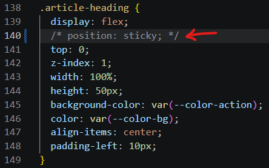
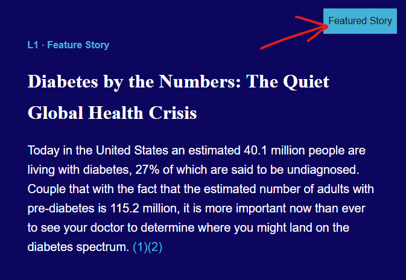
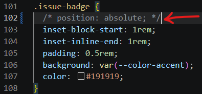
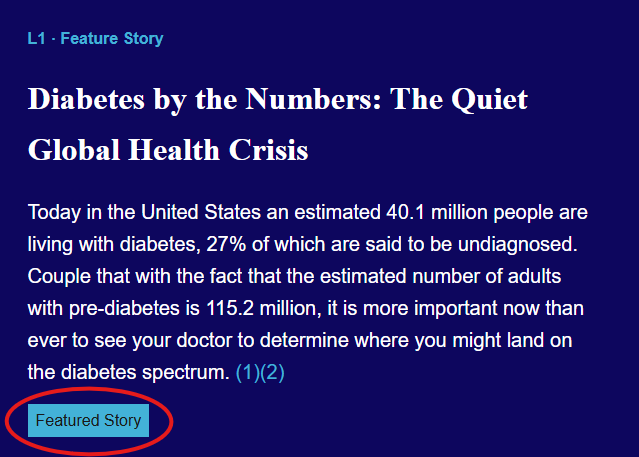
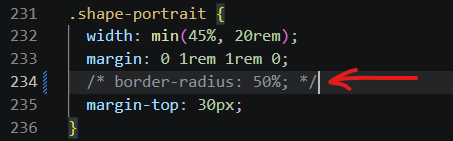
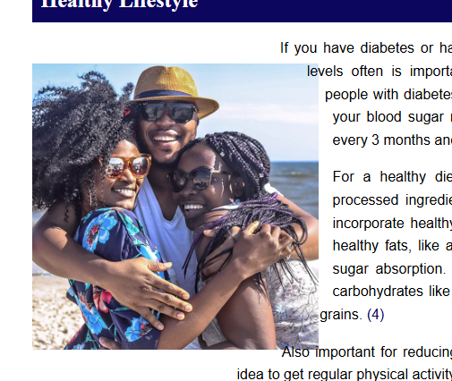
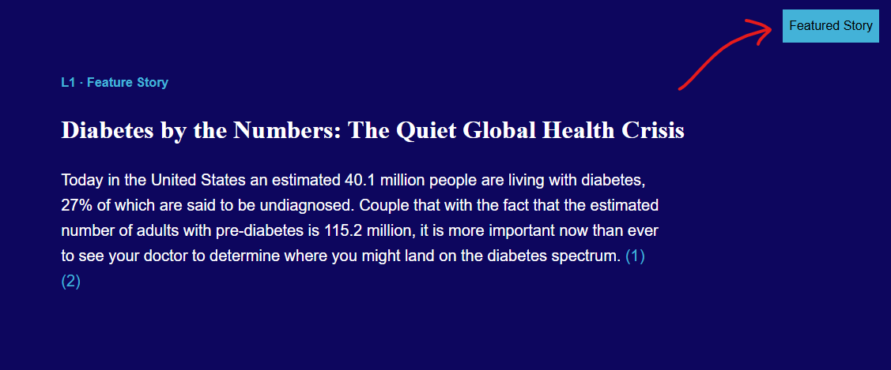
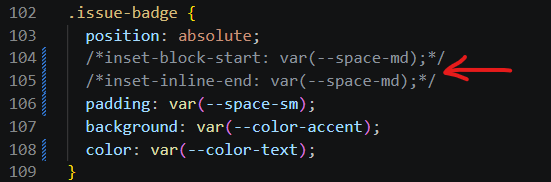
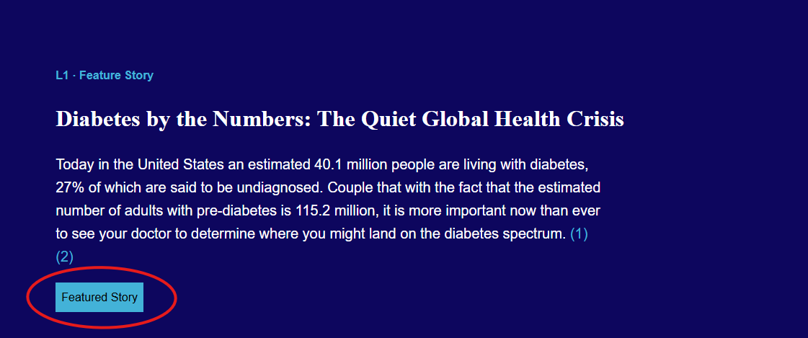

| Feature | MDN Reference | Checked Date | Fallback When Unavailable | Evidence |
|---|---|---|---|---|
position: sticky |
MDN: Position Relevant Link |
11/11/2026 | Heading becomes normal-flow content and doesn't anchor to top of viewport when scrolled, but still visible |
 |
position: absolute |
MDN: Position Relevant Link |
11/11/2026 | Elements are returned to normal document flow and out of position |
Before  After   |
border-radius |
MDN: Rounded Corners Relevant Link |
11/11/2026 | Object border will not be rounded and/or images will not be clipped but images are still visible. |
Before After   |
inset-block-start & inset-inline-end
|
MDN: inset-block-start CSS property Relevant Link MDN: inset-inline-end CSS property Relevant Link |
11/11/2026 | Absolutely positioned object is out of position in the bottom left of the parent container; not ideal, but still visible |
Before  After   |